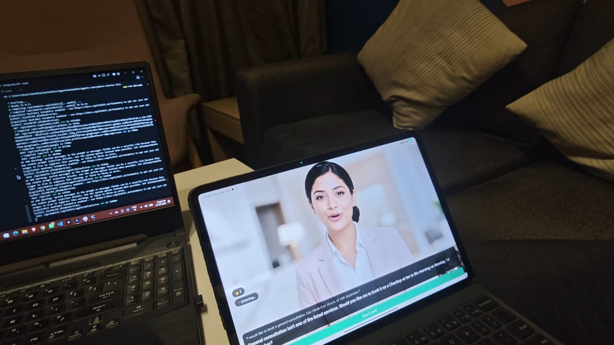
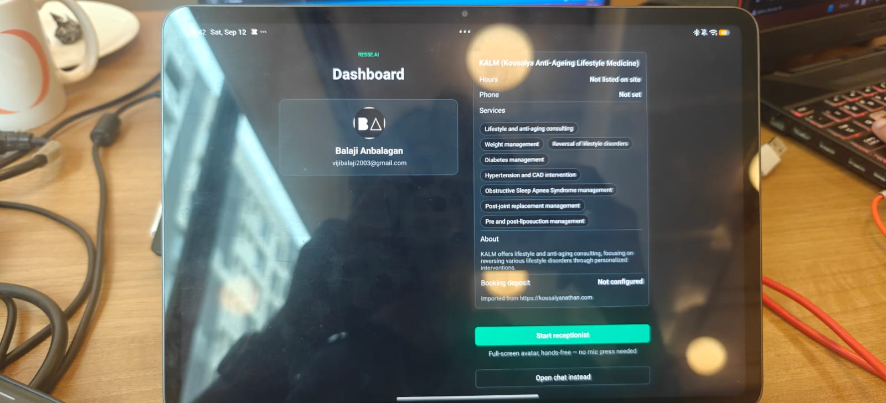
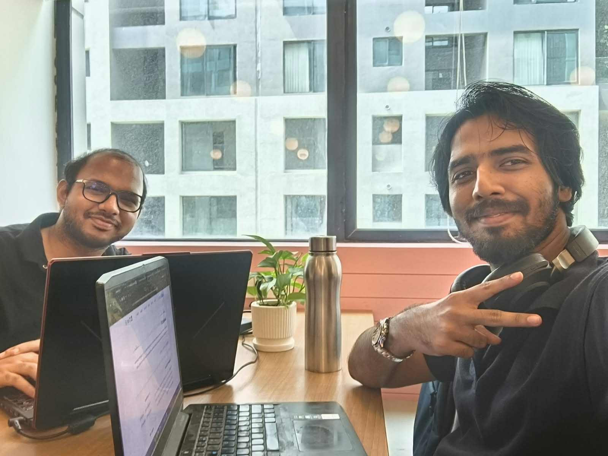

Resse.ai
An old tablet, mounted where customers walk in. It notices someone is there, listens, answers out loud, and books them in — then waits for the next person.
Listening…Small businesses lose customers to a phone nobody is free to answer.
The receptionist is busy with the person in front of them, so the person walking in waits, and the person calling gives up. Resse.ai takes the walk-in half: it greets, answers what the business actually offers, finds a real open slot, and holds the booking until a human confirms it.
Nothing here is scripted. This is what the agent said when asked for a service the clinic doesn't list.
Visitor
“I would like to book a general consultation.”
Resse.ai
General consultation isn’t one of the listed services. Would you like me to book it as a Checkup at ten in the morning on Monday, 14 September?
It didn’t invent a service to be agreeable, and it didn’t invent a time. The slot came from the clinic’s opening hours minus everything already booked — including the owner’s Google Calendar. Confirming it is a human’s tap, not the agent’s decision.
Face detection runs on the device itself — MediaPipe compiled to WebAssembly, inside a hidden WebView — so it costs nothing per check and no camera frame ever leaves the tablet.
Recording stops on silence rather than on a timer, so short answers aren’t padded and long ones aren’t cut off.
Then it listens again, immediately, for the follow-up — the thing that separates a conversation from a search box.
Confirming writes a Google Calendar event. If the business takes a deposit, a UPI QR appears on the approval card first.

Point it at a business’s website and it builds the receptionist’s knowledge from what it finds. Behind that sits an admin surface: today’s numbers, the client directory, an appointments calendar, and settings for the voice, the avatar and the integrations.
An Expo app holds the tools and the app state; a Next.js backend holds the CopilotKit runtime, the API keys, and the speech routes. Tool calls execute on the device — that’s how the agent can open a dialer, render a QR, or block on someone’s approval tap — while the model runs server-side. Swapping the model provider, or the whole agent framework, is a change in one file.
Resse.ai was made by Balaji Anbalagan and Saisathish Karthikeyan for AI Tinkerers’ Agents, Everywhere hackathon in September 2026, starting from CopilotKit’s starter kit.
The constraint that shaped most of it: stay inside Expo Go, so the whole thing runs by scanning a QR code instead of producing a build. That ruled out every native face-detection module — which is why detection ended up as WebAssembly in a hidden WebView.
